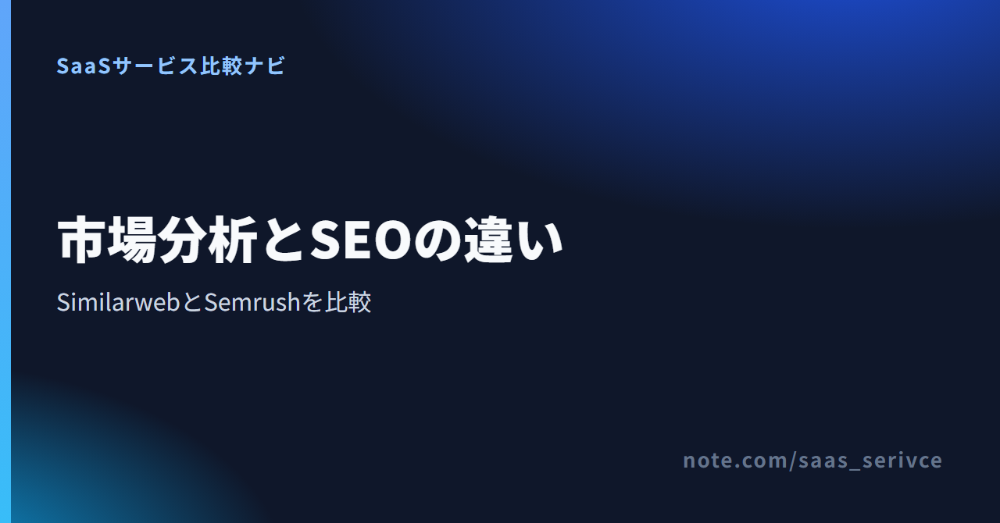
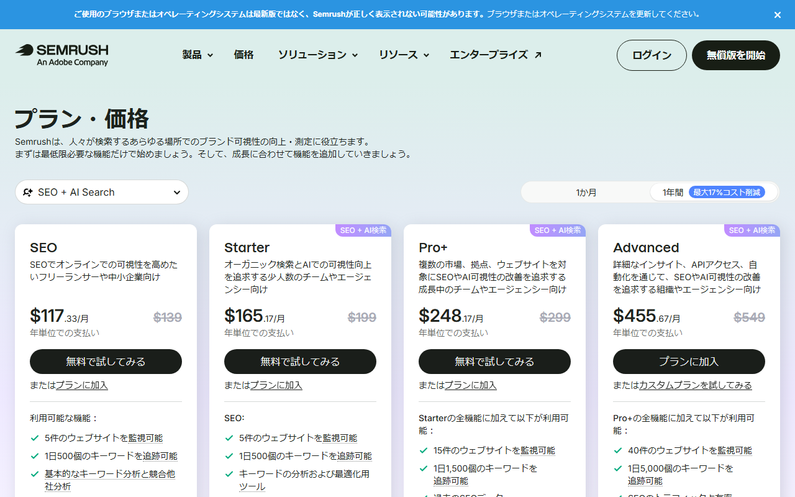
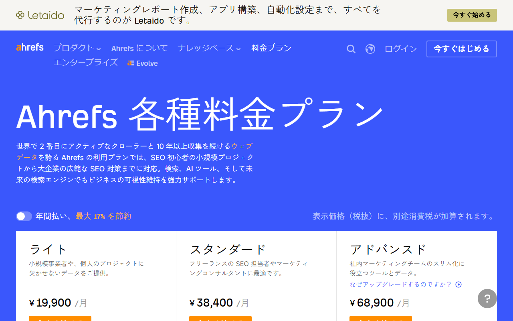

SimilarwebとSemrushを比較｜市場分析とSEO・料金・日本語の違い
Similarwebは競合サイト全体や市場を調べるツールです。Semrushはキーワード調査からサイト改善まで、SEOの実務を支えます。
ただし、両者が担う仕事は異なります。料金や無料枠、日本語対応、推定値の違いを踏まえて選び方を紹介します。
SimilarwebとSemrushの違い（市場分析・SEO・料金・日本語）
競合サイト全体の訪問状況や市場を見たいならSimilarweb、検索順位やサイト改善を進めたいならSemrushが基本です。
- 得意な仕事：市場分析／SEO改善
- 無料入口：両方に無料アカウントあり
- 料金体系：対象機能ごとに異なる
- 日本語環境：両方の製品UIが対応
- 向いている人：市場担当／SEO担当
全流入や市場規模まで見渡すならSimilarwebが候補です。無料版はWorldwide、過去1〜3か月、上位5件の表示に限られます。キーワードや順位、サイト監査を中心に進めるならSemrushを選びます。
競合サイト分析の機能と、無料版を始める入口が分かります。
データの集め方と推定値の読み方
どちらも第三者サイトの数値には推定が含まれます。絶対値を正解として扱うより、同じ製品と条件で競合との差や時系列の変化を見る使い方が適しています。
Similarwebは複数のデータ源から全体像を推定する
Similarwebは、サイト運営者から得た計測データを材料にします。そこへ匿名化された利用データ、公開情報、提携先のデータを組み合わせています。
そのため、自社のアクセス解析と同じ数字が出るとは限りません。訪問数の少ないサイトでは、データ不足を示すメッセージや「N/A」が表示される場合もあります。
同じ条件で調べた競合との差を見ましょう。月ごとの増減や流入チャネルを追うと、市場の変化をつかめます。
SemrushはSEOデータと全トラフィック分析を分けて見る
SemrushのDomain Overviewで分かるのは、主に自然検索の推定流入、キーワード、被リンクです。検索結果での競争を調べる機能なので、サイトへの全訪問を示すものではありません。
検索以外を含む訪問状況は、別製品のTraffic & Marketで調べます。SEOプランの数字をSimilarwebの総トラフィック推定と比べると、対象範囲がずれてしまいます。
自社サイトはGA4などの実測値と照合する
競合サイトには自社の計測タグを置けないため、外部ツールの推定値を使います。一方、自社サイトの成果はGA4の実測値を基準に判断します。
検索実績はGoogle Search Consoleとも照らし合わせます。競合の傾向を見る数字と、自社の成果を測る数字は役割を分けましょう。
比較時には、次の条件をそろえます。
- 同じドメインを入力する
- 同じ期間を選ぶ
- 同じ国を選ぶ
- 同じ製品内で推移を見る
機能の違いを仕事別に比べる
機能名が似ていても、扱うデータの範囲は異なります。定例会議や改善作業でどの数字を使うか決めると、製品を選びやすくなります。
Similarweb｜競合サイト全体と市場を調べる

Similarwebでは、競合サイトの訪問数や流入チャネル、国別の動向を調べます。検索だけでなく、ダイレクト訪問や参照元などを含めて全体像を見たい場面に合う製品です。
- 向く仕事：競合調査や新市場の把握
- 主な出力：訪問傾向、流入チャネル、国
- 注意点：小規模サイトはデータ不足もある
無料版は過去1〜3か月、上位5件などの制限付きです。
分析できる競合サイトや市場データの範囲を確認できます。
Semrush｜キーワード調査とSEO改善を進める

Semrushは、キーワード選定、検索順位の追跡、サイト監査などを扱うSEOツールです。Domain Overviewでは、他社ドメインの自然検索流入やキーワード、被リンクを調べられます。
- 向く仕事：毎週のSEO調査と改善
- 主な出力：キーワード、順位、監査結果
- 注意点：全流入分析は別製品
全経路の訪問推計が必要なら、Traffic & Marketを別に検討します。
SEOプランごとの機能と、無料アカウントで使える範囲を見られます。
広告・コンテンツ・被リンクは目的を絞って比べる
両製品には似た名前の分析機能があります。ただし、同じ「競合分析」でも、Similarwebは市場と流入経路、Semrushは検索結果での競争が中心です。
広告流入まで広く見るのか、検索キーワードから記事を直すのかを先に決めましょう。被リンクと自然検索を詳しく調べるなら、Ahrefsも候補です。
料金と無料で使える範囲を比べる
どちらも無料で使い始められますが、無料で見られる対象と有料化の境目が違います。料金に加えて、必要な分析を含むプランの総額も比べてください。
円換算は1ドル=157円が目安です。為替で変動します。
Similarwebの無料版と個人向けプラン
無料アカウントは期限の定めなく使えます。過去1〜3か月、上位5件の表示に限られ、国別フィルタはありません。7日間の無料トライアルはカード登録が必要で、期間内に解約しないと自動課金されます。
- 無料版：期限なし、表示範囲に制限あり
- 競合分析：年払い$125/月、月払い$199
- 競合分析＋SEO＋AEO：年払い$333/月、月払い$399
- 広告分析を含むプラン：年払い$542/月、月払い$649
- ビジネス向け：個別見積もり
年払いの競合分析プランは月額換算で約19,625円です。個人向け公開プランは1ユーザーで、確認できる履歴は3か月または6か月です。何か月分のデータが必要かも、選ぶ条件になります。
月払いと年払いの差に加え、各プランの分析対象を確認できます。
Semrushの無料アカウントと有料プラン
Semrushにはカード不要の恒久無料アカウントがあります。Domain OverviewやKeyword Researchなどは、それぞれ1日10クエリが上限です。
- 無料アカウント：カード不要、回数制限あり
- SEO：月払い$139、年払い$117.33/月
- Starter：月払い$199、年払い$165.17/月
- Pro+：月払い$299、年払い$248.17/月
- Advanced：月払い$549、年払い$455.67/月
有料プランでは、SEOの調査量や追跡範囲が広がります。年払いは最大17%割引です。
無料枠の制限と、SEO・AI検索向け有料プランの違いが分かります。
全トラフィック分析は同じ機能範囲で比べる
ここまで挙げたSemrushの料金はSEO系プランのものです。全経路の訪問数を推計するTraffic & Marketは別製品で、無料ユーザーが見られるのはサンプルドメインに限られます。
Similarwebの市場分析プランと比べるなら、Semrush側もTraffic & Marketを含めます。SEOプランの安さだけで決めると、必要な数字が欠ける恐れがあります。
日本語対応・サポート・日本からの支払い
両製品とも製品UIを日本語に切り替えられます。ただし、公開ヘルプ、有人サポート、請求書の条件はそれぞれ異なります。
日本語UIとヘルプの範囲
- SimilarwebのUI：設定から日本語を選択可能
- Similarwebのヘルプ：一部に日本語版あり
- SemrushのUI：製品UIで日本語を選択可能
- Semrushのヘルプ：日本語ナレッジベースあり
カード・通貨・請求書の違い
Similarwebの個人向けプランはUSDのクレジットカード払いです。法人向けはカードまたは請求書払いに対応しています。
Semrushも日本語料金ページではUSD表示です。対応カードはVisa、Mastercard、Discover、American Expressです。条件を満たす年次契約では銀行送金を使えます。PDF請求書は管理画面から取得できます。
Semrushの対応カード一覧にJCBの記載はありません。Similarwebの公開案内では、カード払いに対応することだけが示され、対応ブランドは分かりません。税務上の扱いは契約主体や利用状況で変わるため、税理士に確認してください。
日本語サポートを重視する場合
Similarwebの法人向けプランには、日本語のトレーニングと専任サポートがあります。個人向けのサポートは、英語のメールとチャットです。
Semrushは日本語のナレッジベースを用意しています。有料プランでは製品に関する個別サポートを使えます。問い合わせ案内には、担当者が回答に使う言語の記載がありません。
日本語ページから、個人向け料金と法人向けの案内へ進めます。
Similarwebが向く人・Semrushが向く人
選定では、担当者が定例会議で出す数字を基準にします。経営企画とSEO担当が分かれているなら、それぞれの担当業務に合わせて製品を分ける方法もあります。
Similarwebが向く人
Similarwebは、新市場の規模感や競合の流入経路を報告する担当者に向きます。
- 担当業務：市場調査、競合調査
- 毎週見る数字：訪問傾向、流入構成
- 必要な出力：競合と市場の変化
Semrushが向く人
Semrushは、キーワード選定からサイト監査、記事改善までを毎週進める人向けです。
- 担当業務：SEO調査とサイト改善
- 毎週見る数字：順位、キーワード、監査結果
- 必要な出力：改善候補と検索機会
併用が向く人
経営企画とSEO担当が分かれる企業では、併用も選択肢になります。Similarwebで市場を捉え、Semrushで改善対象を具体化します。推定値は製品ごとに追います。
無料版に競合ドメインを入力し、必要な市場データが表示されるか試せます。
Similarweb・Semrush・Ahrefsの選び方
市場・全チャネル分析にはSimilarweb、SEO施策全般にはSemrushが向きます。被リンクと自然検索・コンテンツ調査を軸にするならAhrefsが候補です。
- 市場・全チャネル：Similarweb
- SEO施策全般：Semrush
- 被リンク・自然検索：Ahrefs
Ahrefsを第三候補にする場面

Ahrefs Freeは、所有権を確認した自社サイト向けに、サイト監査やサイトエクスプローラーなどを提供します。別のWebsite Traffic Checkerでは、登録せずに任意サイトの検索トラフィック推定値を見られます。
Ahrefsの中心は、被リンクや自然検索、コンテンツ調査です。契約前に確認したい条件は次のとおりです。
- 無料入口：自社サイト向けAhrefs Freeなど
- 無料トライアル：提供なし
- 最安プラン：Starter 月額4,460円
- 画像の先頭プラン：Lite 月額19,900円
- 日本語：製品UIとヘルプに対応
- 支払い：Visa、Mastercardなど
料金画像はLite以降を表示しているため、Starterは写っていません。最安はStarterの月額4,460円、画像の先頭にあるLiteは月額19,900円です。
対応カードにはAmerican ExpressとUnionPayも含まれます。JCBの記載はありません。有人サポートの回答言語は案内されていません。
無料ツールと有料プランで分析できる対象の違いを確認できます。
三者の数字は同じ製品内で比べる
三者はデータ源も指標の対象も異なります。「トラフィック」が全訪問を指すのか、自然検索だけを指すのかを見分け、同じ製品内で比べてください。
乗り換え前に同じドメインで無料枠を比べる
製品を替えると、レポートの指標名や対象範囲も変わります。切り替える前に、定例レポートに必要な項目を無料枠で再現し、新しいレポートを組み直します。
無料アカウントで同じ対象を調べる
自社と主要な競合のドメインを両方へ入力します。Similarweb無料版はWorldwide、過去1〜3か月、上位5件まで。Semrush無料版は主要機能ごとに1日10クエリです。
総訪問と自然検索流入は同じ指標ではありません。数値の大小を直接比べず、必要な項目が表示されるかを製品ごとに確かめます。
定例レポートに必要な項目を書き出す
現在のレポート項目が、切り替え先のどの機能に当たるかを書き出します。総訪問や流入元はSimilarweb、キーワードや順位、サイト監査はSemrushの担当です。Semrushで全経路の訪問推計が必要なら、別製品のTraffic & Marketも検討します。
CSVやレポート出力が必要なら、候補プランに含まれるかも併せて確認します。無料枠で不足した項目だけを書き出し、必要な機能を含むプランを選んでください。
解約前に更新日と返金条件を確かめる
Similarwebは設定画面またはメールで解約でき、契約期間の終了まで利用できます。支払済み料金は原則返金されません。月次契約は14日前、年次契約は30日前までの書面通知が必要です。
Semrushはログイン後の解約フォームから申請し、届いた確認メールを24時間以内に承認します。解約は契約期間の終了時に有効です。
返金保証は、初回の12か月以上の契約を購入後7日以内に書面で申請した場合に限られます。月払いと更新分は対象外です。
乗り換え前は、次の順で比べます。
- 同じ対象を入力する
- 定例レポートの項目を再現する
- 不足する機能とプランを特定する
- 更新日前に判断する
市場データの無料表示範囲と、7日間トライアルの条件を見られます。
SEOデータの無料枠と、各有料プランの契約単位を確認できます。
まとめ：市場分析ならSimilarweb、SEO施策ならSemrush
競合サイト全体や市場の把握にはSimilarweb、検索流入を増やす作業にはSemrushが基本です。被リンクや自然検索を詳しく調べるときはAhrefsも比べます。
- 市場・全チャネル：Similarweb
- SEO施策：Semrush
- 被リンク・自然検索：Ahrefs
- 両方必要：SimilarwebとSemrushの併用
最初から有料プランを決める必要はありません。自社と競合の同じドメインを両方の無料版へ入力し、会議や改善作業に必要な数字が出るかを比べてください。
Similarwebの無料版で競合を調べると、SemrushやAhrefsとの役割分担を決める材料になります。